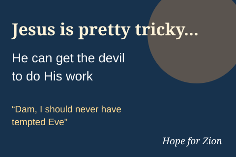

Jesus Is Pretty Tricky
Unplaced 13 November 2026 · Hope for Zion
Jesus can get the devil to do His work. The devil regrets tempting Eve.
Image status: Text-only thumbnail placeholder. The original generated artwork has not yet been archived in this repository.
Reconstruction notes
Wide cinematic sunset. Jesus smiling knowingly at left, in a cream robe and burgundy cloak. At right a horned red devil struggles to haul a large cross-carved stone using a rope. Large headline: “Jesus is pretty tricky... He can get the devil to do His work”. Speech bubble from the devil: “Dam, I should never have tempted Eve”. Small signature: “Hope for Zion”.
Recreation is approximate, not guaranteed pixel-identical. Keep a full-resolution original in a separate archive whenever possible.